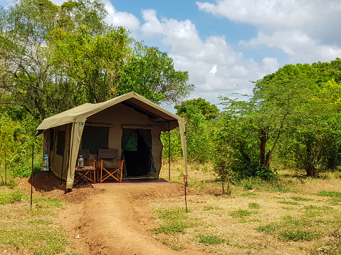

LOOKING FOR PLACES TO VISIT AND CAMP IN SRI LANKA?
Decide your camping travel place.
KNUCKLES MOUNTAIN RANGE
A UNESCO World Heritage Site in Srilanka where you can explore with an
absolute refreshing weather.It's also considered one of the toughest hiking
trails in the country.While camping you can see dense tea plantations , forests
and enjoy your stay by night safaris , mountain adventures.
YALA SAFARI CAMPING
This is situated in the southeast region of Sri Lanka.The Yala national park is
specialy known for the varieties of wild animals.Imagine spending your time
surrounding with freshwater lakes,rocky pools and diffeent kind of animals.You
can partake in activities such as bird watching , jeep safari or relax in your camp
and enjoy the nature.
MEEMURE
Meemure is village located near Kandy and Matale Districts in the Knuckles
Mountain Range. This village is consists of several beautiful sites to visit
and while you camping you can explore the forests ,the village and amazing
water streams which you can cool down yourself while enjoying the moment.
NARANGALA
Narangala mountain located in the Uva Provine of Sri Lanka and this is
the second highest mountain in Uva Province.This mountain also known as
Golden Grass Mountain.You can experience a great adventure by hiking and
you can relax and enjoy a great view on the mountain while camping.

WILPATTU NATIONAL PARK
Wilpattu National Park is the oldest and largerst national park in Sri Lanka.
The existence of natural lakes also gives it a special space.You can get an
opportunity to capture amazing scenaries of animals specially elephants,
leopards and sloth bear.
KALPITIYA BEACH
Kalpitiya beach is one of the best beaches in Sri Lanka where you can enjoy
camping.You can experience jeep safari rides , dolphing watching , kite surfing
while on Kalpitiya beach.And also you can enjoy getting the best view of sunset
and sunrise while relaxing.